Visualisation
| Type | X Variable | Y Variable | Purpose of analysis | Type of chart | How it looks |
|---|---|---|---|---|---|
| Univariate | Continuous | - | How the values on the X variable are distributed? | Histogram, Distribution plot | Histogram 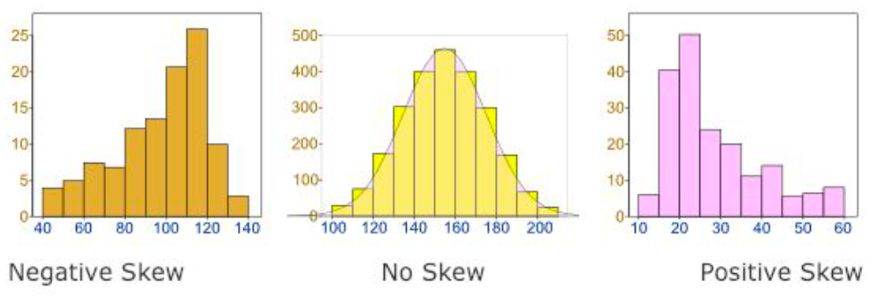 Distribution plot for car horsepower. 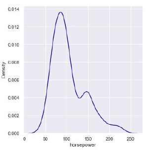 |
| Univariate | Categorical | - | What is the count of observations in each category of X variable? | Count plot | Count plot for degree of students 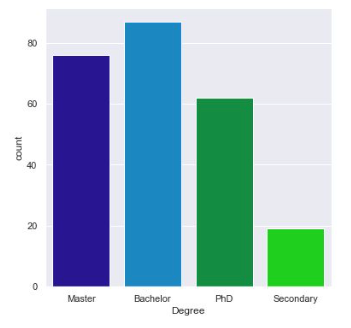 |
| Bivariate | Continuous | Continuous | How Y is correlated to X? | Scatter plot | Scatter plot restaurant bill vs tip 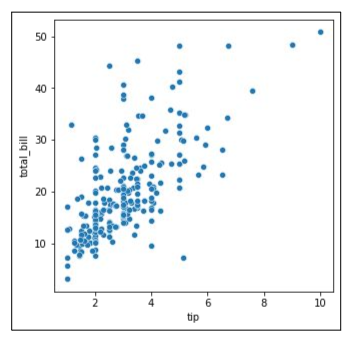 |
| Bivariate | Time related (months, hours etc) | Continuous | How Y changes over time? | Line plot | Line plot of sales over a 10 days period 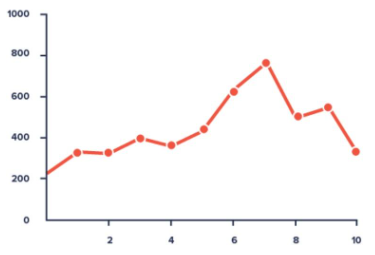 |
| Bivariate | Continuous | Categorical | How range of X varies for various category levels | Box plot, Swarm plot | Box plot of tip by meal time 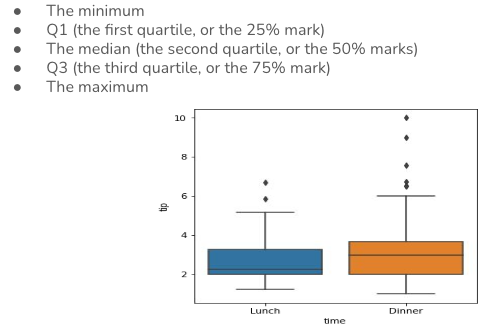 Swarm plot tips per week day 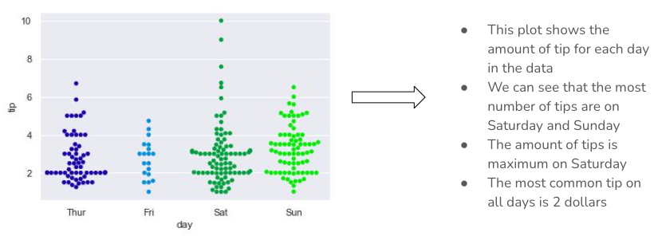 |
| Bivariate | Categorical | Categorical | What is the number of % of records of X which falls under each category of Y | Stacked bar plot | Smokers/non-smokers vs fitness level 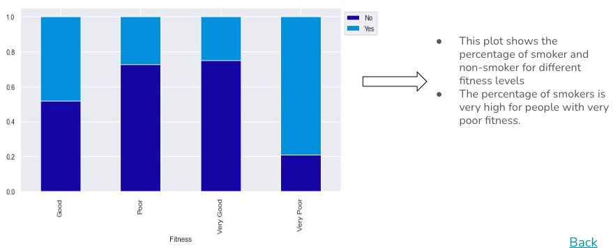 |
| Type | Variables | Purpose of analysis | Type of chart | How it looks |
|---|---|---|---|---|
| Multivariate | Continuous (more than 2) | How to visualize relationshipo across multiple combination of variables? | Pair plot | 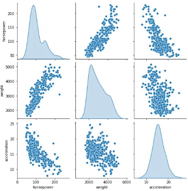 |
| Multivariate | Continuous(more than 2) | How to visualize the spread of values in the data with color-encoding? | Heatmap | 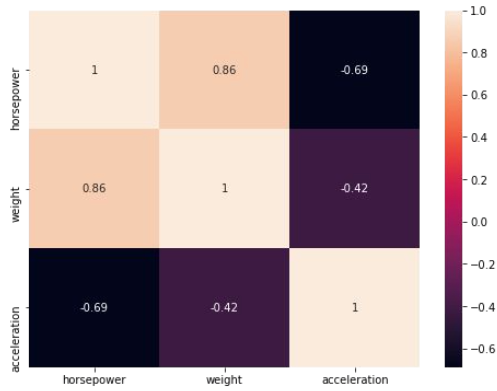 |
Libraries - matplotlib & seaborn
matplotlib is for basic charts, seaborn is able to handle more complex charts and it builds on top of matplotlib, so it requires that to be imported too.
Some important matplotlib functions: plot(), hist(), bar(), pie(), scatter(), text(), legend(), etc.
Some important seaborn functions: displot(), boxplot(), stripplot(), pairplot()
import matplotlib.pyplot as plt
import seaborn as sns
# if desired, also tell python to display the charts inline
%matplotlib inline
Histogram
A histogram is a univariate plot which helps us understand the distribution of a continuous numerical variable. It breaks the range of continuous variables into an interval of equal length and then counts the number of observations in each interval.
# load some data, assume it's cars info and has a price column
#df = pd.read_csv('/path/to/file')
# if we want to customize, we'll use 'matplotlib' properties
plt.title('Histogram:Price')
plt.xlim(1000, 3000) # limits between 1000 and 3000 for the x axis
plt.xlabel('Price')
plt.ylabel('Count')
# histoplot for the 'price' column. It uses above settings and uses blue to drow the bars. It will group all data in 5 groups/bins/bars and each bin will be 200px wide. It will show the kernel density estimation curve
sns.histplot(data=df, x='price', color='blue', bins=5, binwidth=200, kde=True)
Subplots
When you want to split the data and show several histograms, you could use subplots
It would look like this: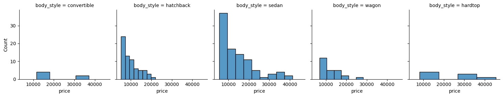
Boxplot
Shows the distribution of numerical data and skewness through displaying the data quartiles
Looks like this: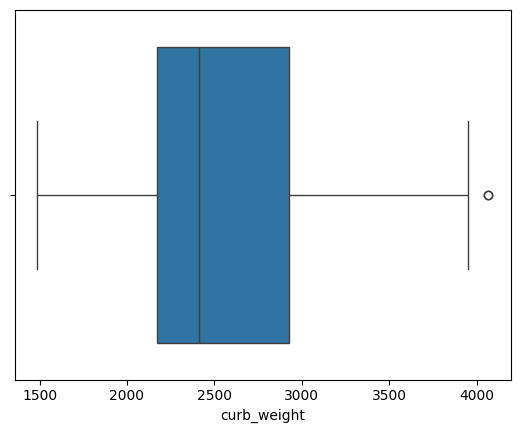
It will look like: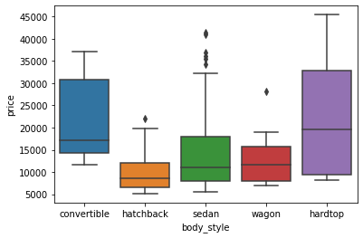
Bar Graph
Used to show the counts of observations in each bin (or level or group) of categorical variable using bars